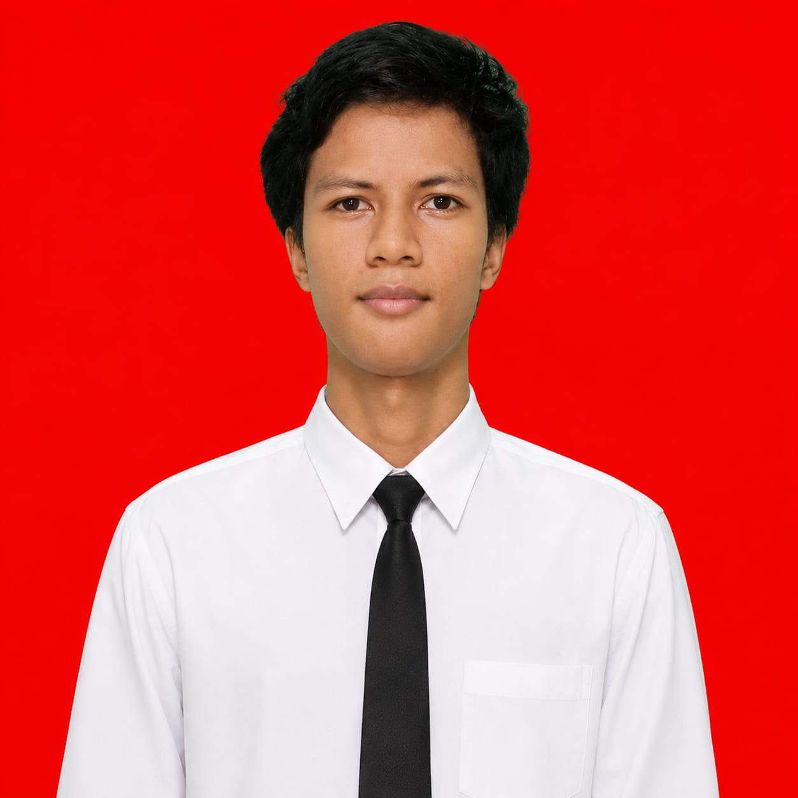
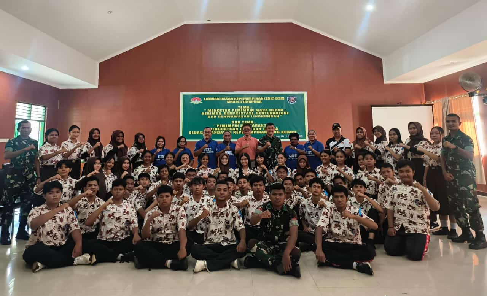
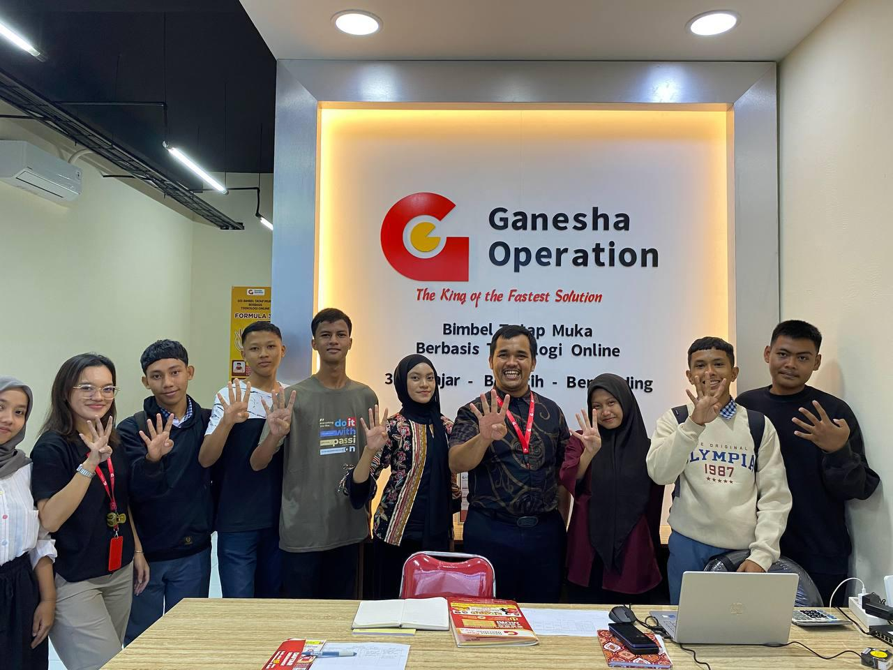
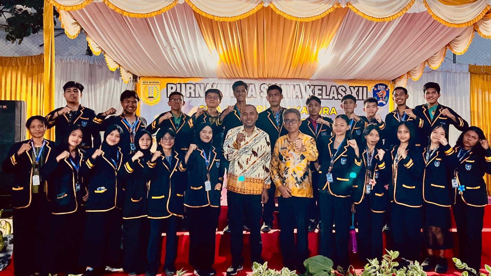
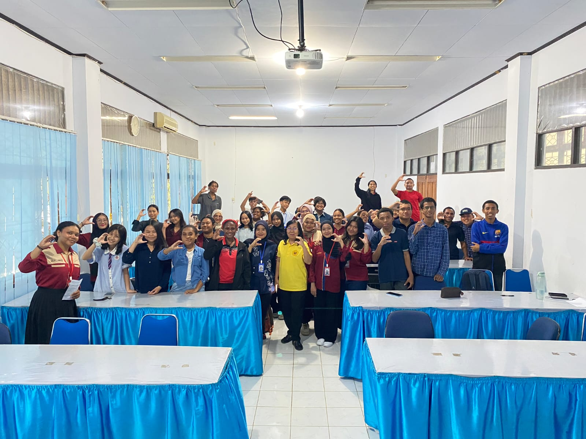
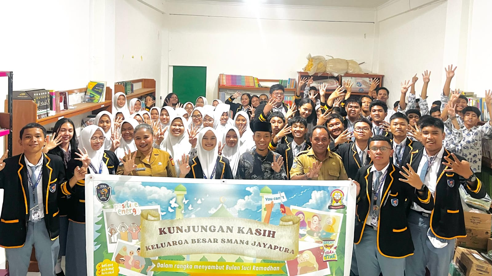
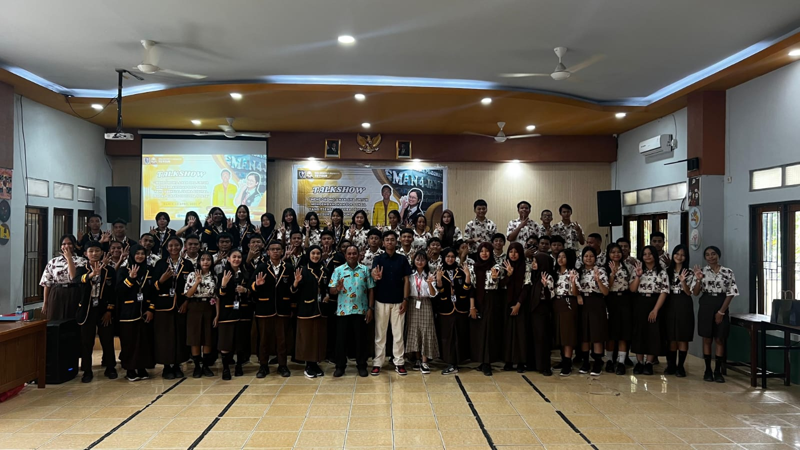

Pangeran
Halo! Saya Pangeran, mahasiswa program studi Statistika yang antusias dalam menerjemahkan angka menjadi wawasan yang bermakna. Berfokus pada analisis data kuantitatif, pemodelan statistik, dan eksplorasi sains data untuk memecahkan masalah nyata.
"In God we trust, all others must bring data."
— W. Edwards DemingMetode & Kompetensi
Saya mempelajari pola, mengekstrak informasi, dan mereduksi ketidakpastian dari kompleksitas sekumpulan data murni guna mendukung pengambilan keputusan berbasis bukti empiris.
Analisis Prediktif
Regresi & Time Series
Komputasi Data
R, Python, SPSS
Uji Hipotesis
Parametrik & Non-Para
Visualisasi Data
ggplot2, Seaborn, Tableau
Eksplorasi & Kegiatan
Dokumentasi riwayat riset lapangan, survei, kepanitiaan, dan aktivitas akademik yang telah saya selesaikan:

Latihan Dasar Kepemimpinan OSIS/MPK
Pembentukan karakter dan kedisiplinan pengurus OSIS melalui Latihan Dasar Kepemimpinan yang diselenggarakan di Rindam XVII/Cenderawasih. (16–18 Januari 2025)

Kolaborasi Strategis OSIS × GO
Pertemuan strategis pengurus OSIS SMAN 4 Jayapura bersama Ganesha Operation (GO) guna membahas rencana kolaborasi program serta penguatan aspek leadership. (16 Juli 2025)

Kepanitiaan Purnawidya SMAN 4 Jayapura
Pengalaman mengelola jalannya upacara kelulusan resmi angkatan 2025 SMAN 4 Jayapura melalui kerja sama tim berskala besar pada 5 Mei 2025.

Mathematics Bootcamp
Program pelatihan intensif mencakup penguasaan matematika, statistika, optimalisasi MS Office, academic writing, serta peningkatan kapasitas public speaking dan pengembangan diri. (Agustus–Oktober 2026)

Kunjungan Kasih & Pengabdian Masyarakat
Menginisiasi dan memimpin pelaksanaan program anjangsana ke Panti Asuhan Yaa Bunayya sebagai bentuk kepedulian sosial, mengasah kemampuan manajemen logistik serta komunikasi publik organisasi. (25 Februari 2025)

Seminar Pengembangan Soft Skill Esensial
Sukses menyelenggarakan talkshow edukatif era digital bagi siswa SMA dengan menggandeng narasumber dari mahasiswa program studi Manajemen Universitas Indonesia dan Moderator dari Duta GenRe Papua guna membangun kesadaran karier masa depan. (10 April 2025)
Connect With Me
- Nama Lengkap: Pangeran Candraning Edhi
- Email: pangeran3ce@gmail.com
- No. Telepon: +62 813-6370-2015
- Bidang Peminatan: Data Science & Quantitative Analyst